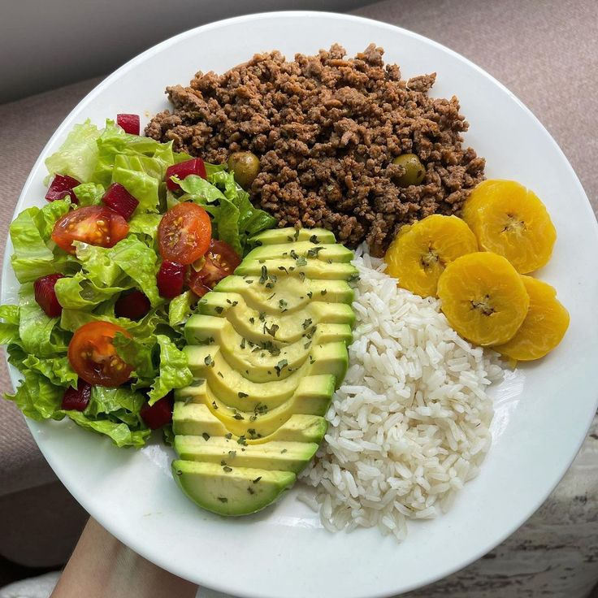

Recetas FitPro
| Recetas | Descripción |
|---|---|
|  Recetas |
Recetas recomendadas para el día a día, ayudando a obtener mejores resultados físicos complementando el ejercicio. 200$ el mes |
 Desayuno |
Ideas para mejorar los desayunos, proporcionando los nutrientes necesarios para mantener un buen ritmo en el día. 70$ el mes |
 Almuerzos y/o comidas |
Comidas especiales para terminar la jornada con un buen nivel de energía. 70$ el mes |
 Cenas |
Comidas recomendadas para la noche, ligeras para el mejor funcionamiento del cuerpo. 70$ el mes |